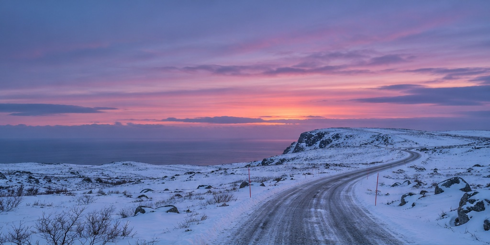
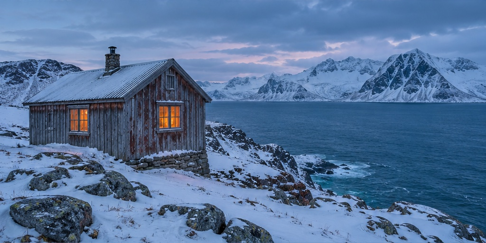
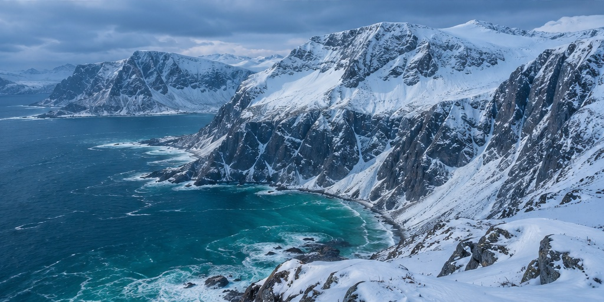

Студия северных
экспедиций
экспедиций
Кольский полуостров · За полярным кругом
За сиянием.
К тёмным берегам Баренцева моря — туда, где зима светится.
Выбрать маршрут
69° С. Ш. Баренцево море
Полевая заметка 01 ↗
Демонстрационные маршруты
Сколько ночей
на Севере?
От одной ночи в тундре до трёх ночей на побережье. Выберите темп и соберите свой план.
Схема маршрута
Не в масштабе
Выберите точку, чтобы увидеть остановку.
Остановки
По дням
Ваш план
1 ночь · Первая ночь в тундре
Демонстрационный маршрут. Сияние зависит от облачности и активности Солнца.
Полевой журнал
Три иллюстрации к маршрутам по Кольскому полуострову.
Дорога в тундру
Последний свет над открытым плато.

Свет в окнах
Дом у Баренцева моря.

Скалы за бухтой
Берег у дальнего мыса.
Пейзажи сгенерированы для демонстрации маршрутов.
Симуляция облачности
Поймай просвет
Посмотрите, как облака скрывают сияние над бухтой.
Ясно. Сияние хорошо видно.
Памятка экспедиции
Перед поездкой
Что взять с собой?
Где мы ночуем?
Сколько предстоит ходить?
Что делать, если сияния не будет?
При облаках ищем просвет с ближайшей точки наблюдения. Прогулки по плато, к бухте и к дальнему мысу остаются в дневном плане, если позволяет погода.